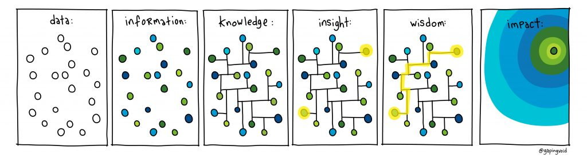

overview of info
description::
× Mcsh-creation: {2020-01-19}
· human-info is the-bio-info (= brain and non-brain) of humans.
name::
* McshEngl.McshLag000003.last.html//dirLag//dirMcsh!⇒info,
* McshEngl.dirLag/McshLag000003.last.html!⇒info,
* McshEngl.human-info!⇒info,
* McshEngl.human-information!⇒info,
* McshEngl.human-infoBrainBio!⇒info,
* McshEngl.info,
* McshEngl.info!~McsLag000003,
* McshEngl.info!=human-information,
* McshEngl.infoHmn!⇒info,
* McshEngl.information.human!⇒info,
* McshEngl.model.info.human!⇒info,
* McshEngl.modelInfoHuman!⇒info,
====== lagoChinese:
* McshZhon.xìnxī-信息!=info,
* McshZhon.信息-xìnxī!=info,
====== lagoGreek:
* McshElln.πληροφορία-ανθρώπινη!=info,
referent of info
description::
× Mcsh-creation: {2026-10-04}
· info'referent is the-entity the-info models.
name::
* McshEngl.info'att001-referent,
* McshEngl.info'referent,
* McshEngl.referent!=human-info-referent,
* McshEngl.referent-of-info,
====== lagoGreek:
* McshElln.αναφερόμενο!το!=referent,
relation-to-referent of info
description::
× Mcsh-creation: {2026-10-04}
· the-relation between the-referent and the-info.
· do-not-confuse this relation and an-evaluation of this relation.
· _sntxZhon: {有}[(关于)[猫]](的)[电影]。yǒu guānyú māo de diànyǐng. != There are movies about cats.
name::
* McshEngl.about!~ConjEngl!=RltnReferent,
* McshEngl.info'relation-to-referent!⇒RltnReferent,
* McshEngl.referent'relation-to-info!⇒RltnReferent,
* McshEngl.RltnReferent,
* McshEngl.ConjZhon.guānyú-关于!=RltnReferent,
====== lagoChinese:
* McshZhon.guānyú-关于!~ConjZhon!=RltnReferent,
* McshZhon.关于-guānyú!~ConjZhon!=RltnReferent,
generic-tree::
* McshEngl.RltnReferent-Gntr,
===
* mapping-relation,
specific-tree::
* true-RltnReferent,
* true-strong-RltnReferent,
* true-weak-RltnReferent,
* true-false-RltnReferent,
* false-weak-RltnReferent,
* false-strong-RltnReferent,
* false-RltnReferent,
RltnReferent.true
description::
× Mcsh-creation: {2026-10-04}
· absolutely correct mapping with the-referent.
name::
* McshEngl.RltnReferent.true,
* McshEngl.true-RltnReferent,
RltnReferent.true-strong
description::
× Mcsh-creation: {2026-10-04}
· strong correct mapping with the-referent.
name::
* McshEngl.RltnReferent.true-strong,
* McshEngl.true-strong-RltnReferent,
RltnReferent.true-weak
description::
× Mcsh-creation: {2026-10-04}
· weak correct mapping with the-referent.
name::
* McshEngl.RltnReferent.true-weak,
* McshEngl.true-weak-RltnReferent,
RltnReferent.true-false
description::
× Mcsh-creation: {2026-10-04}
· correct and correctNo mapping with the-referent.
name::
* McshEngl.RltnReferent.true-false,
* McshEngl.true-false-RltnReferent,
RltnReferent.false-weak
description::
× Mcsh-creation: {2026-10-04}
· weak correctNo mapping with the-referent.
name::
* McshEngl.RltnReferent.false-weak,
* McshEngl.false-weak-RltnReferent,
RltnReferent.false-strong
description::
× Mcsh-creation: {2026-10-04}
· strong correctNo mapping with the-referent.
name::
* McshEngl.RltnReferent.false-strong,
* McshEngl.false-strong-RltnReferent,
RltnReferent.false
description::
× Mcsh-creation: {2026-10-04}
· absolutely correctNo mapping with the-referent.
name::
* McshEngl.RltnReferent.false,
* McshEngl.false-RltnReferent,
====== lagoGreek:
* McshElln.μη-σωστή--σχέση-αναφερόμενου!=RltnReferentFalse,
RltnReferent.misinformation
description::
× Mcsh-creation: {2026-10-04}
· a not-intentional false-evaluation (not deliberately deceptive).
name::
* McshEngl.misinformation-RltnReferent,
* McshEngl.mistake-RltnReferent,
* McshEngl.RltnReferent.mistake,
* McshEngl.RltnReferentMisinfo,
====== lagoGreek:
* McshElln.λάθος--σχέση-αναφερόμενου!=RltnReferentMisinfo,
RltnReferent.disinformation
description::
× Mcsh-creation: {2026-10-04}
· an intentional false-evaluation (deliberately deceptive).
name::
* McshEngl.disinformation-RltnReferent,
* McshEngl.lie-RltnReferent,
* McshEngl.RltnReferentDisinfo,
====== lagoGreek:
* McshElln.απατηλή--σχέση-αναφερόμενου!=RltnReferentDisinfo,
* McshElln.ψευδής--σχέση-αναφερόμενου!=RltnReferentDisinfo,
info-resource of info (link)
DOING of info
description::
× Mcsh-creation: {2026-10-04}
· any doing on info.
name::
* McshEngl.info'doing,
specific-tree::
* braining,
* referenting,
evoluting of info
description::
× Mcsh-creation: {2020-01-19}
name::
* McshEngl.evoluting-of-info,
* McshEngl.info'evoluting,
GENERIC-SPECIFIC-TREE of info
description::
× Mcsh-creation: {2026-09-29}
name::
* McshEngl.info'generic-specific-tree,
* McshEngl.info'specific-generic-tree,
generic-tree::
* McshEngl.info-Gntr,
===
* McshEngl.info'generic,
* bio-info-gtr,
* model,
* entity,
specific-tree::
* McshEngl.info.specific,
* McshEngl.info-Sptr,
===
* brain-info,
* brainNo-info,
info.brain
description::
× Mcsh-creation: {2026-10-04}
· brain-info is info created by the-human-brain.
name::
* McshEngl.human-infoBrain!⇒infoBrain,
* McshEngl.infoBrain!=human-infoBrain,
* McshEngl.argtBraining.infoBrain,
* McshEngl.info.brain!⇒infoBrain,
* McshEngl.brain-info!⇒infoBrain,
referent of infoBrain
description::
× Mcsh-creation: {2026-10-04}
· infoBrain is a-model of its referent.
name::
* McshEngl.infoBrain'referent,
* McshEngl.argtBraining.referent-of-infoBrain,
* McshEngl.infoBrain'att001-referent,
braining of infoBrain (link)
GENERIC-SPECIFIC-TREE of infoBrain
description::
× Mcsh-creation: {2026-09-29}
name::
* McshEngl.infoBrain'generic-specific-tree,
* McshEngl.infoBrain'specific-generic-tree,
generic-tree::
* McshEngl.infoBrain-Gntr,
===
* ... entity-Gntr,
specific-tree::
* McshEngl.infoBrain.specific,
* McshEngl.infoBrain-Sptr,
===
* BrainIn-infoBrain,
* braininNo-infoBrain,
===
* sensation-infoBrain,
* preconcept-infoBrain,
* concept-infoBrain,
* unit-infoBrain,
* view-infoBrain,
* worldview-infoBrain,
* knowledge-infoBrain,
* method-infoBrain,
infoBrain.in
description::
× Mcsh-creation: {2026-10-04}
· BrainIn-infoBrain is infoBrain inside the-brain.
· sensorialNo-brain-info is infoBrain humans can-NOT-sense (see or hear or touch).
name::
* McshEngl.infoBrain.in!⇒infoBrainIn,
* McshEngl.infoBrain.001-BrainIn!⇒infoBrainIn,
* McshEngl.BrainIn-infoBrain!⇒infoBrainIn,
* McshEngl.infoBrainIn,
* McshEngl.infoBrainSensorialNo!⇒infoBrainIn,
* McshEngl.sensorialNo-brain-info!⇒infoBrainIn,
* McshEngl.sensorialNo-infoBrain!⇒infoBrainIn,
GENERIC-SPECIFIC-TREE of infoBrainIn
description::
× Mcsh-creation: {2026-10-04}
name::
* McshEngl.infoBrainIn'generic-specific-tree,
* McshEngl.infoBrainIn'specific-generic-tree,
generic-tree::
* McshEngl.infoBrainIn-Gntr,
===
* ... entity-Gntr,
specific-tree::
* McshEngl.infoBrainIn.specific,
* McshEngl.infoBrainIn-Sptr,
===
* mind-info,
* semu-info,
===
* sensation,
* preconcept,
* mind-concept,
* semu-concept,
* brainIn-concept,
* mind-view,
* mind-worldview,
* semu-view,
infoBrainIn.memory
description::
× Mcsh-creation: {2026-10-04}
· memory-info is infoBrainIn stored in organBrain.
name::
* McshEngl.infoBrainIn.memory!⇒infoMemory,
* McshEngl.infoMemory,
* McshEngl.memory-info!⇒infoMemory,
infoBrainIn.sensation
description::
× Mcsh-creation: {2026-10-04}
· the-output of sensing, is the-sensation.
name::
* McshEngl.argtSensing.sensation!⇒sensation,
* McshEngl.infoBrainIn.sensation!⇒sensation,
* McshEngl.infoSensation!⇒sensation,
* McshEngl.sensation,
* McshEngl.FctgSensing'03_sensation!⇒sensation,
* McshEngl.FctgSensing'att003-sensation!⇒sensation,
* McshEngl.FctgSensing'sensation-att003!⇒sensation,
* McshEngl.sensory-information!⇒sensation,
====== lagoGreek:
* McshElln.αίσθημα!=sensation,
stimulous of sensation (link)
sensing of sensation (link)
infoBrainIn.preconcept
description::
× Mcsh-creation: {2026-10-04}
· many sensations make-up a-preconcept, a-mind-concept without name.
name::
* McshEngl.infoBrainIn.preconcept!⇒preconcept,
* McshEngl.infoPreconcept!⇒preconcept,
* McshEngl.preconcept,
====== lagoGreek:
* McshElln.προέννοια!=preconcept,
referent of preconcept
description::
× Mcsh-creation: {2026-10-04}
· referent-of-preconcept is the-stimulus of its sensations.
name::
* McshEngl.preconcept'referent,
* McshEngl.referent-of-preconcept,
infoBrainIn.mind-concept
description::
× Mcsh-creation: {2026-10-04}
· mind-concept is a-preconcept with a-mind-name.
name::
* McshEngl.concept.mind!⇒cptMind,
* McshEngl.conceptBrainHmn!⇒cptMind,
* McshEngl.conceptBrain.human!⇒cptMind,
* McshEngl.conceptMind!⇒cptMind,
* McshEngl.cptMind, {2020-04-30},
* McshEngl.cptMindHmn!⇒cptMind,
* McshEngl.infoBrainIn.mind-concept!⇒cptMind,
* McshEngl.infoMind.001-concept!⇒cptMind,
* mindConcept!⇒cptMind,
* McshEngl.mind-concept!⇒cptMind,
* McshEngl.mind-concepts!~plural!⇒cptMind,
* McshEngl.human-conceptBrain!⇒cptMind,
* McshEngl.human-mind-concept!⇒cptMind,
====== lagoSinagu:
* McshSngu.enioBrainoHo!=cptMind,
====== lagoGreek:
* McshElln.ανθρώπινη-έννοια-εγκεφάλου!=cptMind,
* McshElln.έννοια-εγκεφάλου-ανθρώπου!=cptMind,
* McshElln.έννοια-νου!=cptMind,
* McshElln.νου-έννοια!=cptMind,
definition.generic.recursive::
· mind-concept is a-preconcept with a-mind-name.
· a-construction of common attributes of mind-concepts[a], is a-mind-concept, I call generic-of-these[a].
· the-most generic of all mind-concepts is a-mind-concept, I call entity.
[HumnSngu.{2021-01-31}]
referent of cptMind
description::
× Mcsh-creation: {2026-10-04}
· cptMind'referent is the-entity the-cptMind models, the-archetype of cptMind.
· cptMind is a-model of its referent.
name::
* McshEngl.cptMind'referent,
* McshEngl.referent-of-cptMind,
mind-name of cptMind
description::
× Mcsh-creation: {2026-10-04}
· mind-name is a-graphic, a-video|gesture, or a-sound a-brain associates with a-cptMind.
name::
* McshEngl.concept-name!⇒nameMind,
* McshEngl.cptMind'mind-name!⇒nameMind,
* McshEngl.cptMind'name!⇒nameMind,
* McshEngl.mind-name-of-cptMind!⇒nameMind,
* McshEngl.mindname!⇒nameMind, {2022-03-23},
* McshEngl.nameMind,
* McshEngl.name.mind!⇒nameMind,
* McshEngl.name.001-mind!⇒nameMind,
specific-tree::
* conceptogram,
* mind-word-name,
info-resource of cptMind
description::
× Mcsh-creation: {2026-10-04}
* https://en.wikipedia.org/wiki/Concept,
* https://en.wikipedia.org/wiki/Concept_learning,
* https://en.wikipedia.org/wiki/Learning_styles,
* https://en.wikipedia.org/wiki/Conceptual_change,
* https://en.wikipedia.org/wiki/Principles_of_learning,
* https://en.wikipedia.org/wiki/Learning_theory_(education),
* https://en.wikipedia.org/wiki/Formal_concept_analysis,
* https://en.wikipedia.org/wiki/Concept_search,
name::
* McshEngl.cptMind'info-resource,
structure of cptMind
description::
× Mcsh-creation: {2026-10-04}
* external-concepts,
** whole-concepts,
** environment-concepts,
* internal|part-concepts,
===
* generic-concepts,
* sibling-concepts,
* specific-concepts,
name::
* McshEngl.cptMind'structure,
DOING of cptMind
description::
× Mcsh-creation: {2026-10-04}
* creating,
** discovering,
** inventing,
** learning,
* changing,
* destroying,
name::
* McshEngl.cptMind'doing,
GENERIC-SPECIFIC-TREE of cptMind
description::
× Mcsh-creation: {2026-10-04}
name::
* McshEngl.cptMind'generic-specific-tree,
* McshEngl.cptMind'specific-generic-tree,
generic-tree::
* McshEngl.cptMind-Gntr,
===
* ... entity-Gntr,
specific-tree::
* McshEngl.cptMind.specific,
* McshEngl.cptMind-Sptr,
===
* attribute-of-concept,
* mind-view,
* mind-worldview,
cptMind.attribute
description::
× Mcsh-creation: {2026-10-04}
· attribute-of-cptMind\a\ is another cptMind that is-related to it\a\.
name::
* McshEngl.attribute-of-cptMind,
* McshEngl.characteristic-of-cptMind,
* McshEngl.cptMind'attribute,
* McshEngl.cptMind.attribute,
* McshEngl.feature-of-cptMind,
cptMind.mind-worldview (link)
infoBrainIn.semu-concept (link)
infoBrainIn.concept
description::
× Mcsh-creation: {2026-10-04}
· BrainIn-concept is a-mind-concept or a-semu-concept.
name::
* McshEngl.BrainIn-concept,
* McshEngl.concept.BrainIn,
* McshEngl.cptBrainin,
* McshEngl.infoBrainIn.concept,
infoBrainIn.semu-info (link)
infoBrainIn.mind-info
description::
× Mcsh-creation: {2026-10-04}
· mind-info is ANY BrainIn-info except semu-info.
name::
* McshEngl.human'att163-mind-info!⇒infoMind,
* McshEngl.infoBrainIn.mind!⇒infoMind,
* McshEngl.infoMind,
* McshEngl.mind-info!⇒infoMind,
* McshEngl.mind-infoHmn!⇒infoMind,
specific-tree::
* sensation,
* preconcept,
* mind-concept,
* mind-view,
* mind-worldview,
infoBrainIn.mind-view
description::
× Mcsh-creation: {2026-10-04}
· mind-view is a-system of mind-concepts.
· a-mind-view is a-mind-concept.
=== zhǔyi-主意!=viewMind:idea:
· _sntxZhon: 这个 主意 好 极了 。 :: Zhège zhǔyi hǎo jíle. != This idea is perfect.
name::
* McshEngl.cognitive-map!⇒viewMind,
* McshEngl.concept-net!⇒viewMind,
* McshEngl.conceptual-graph!⇒viewMind,
* McshEngl.conceptual-model!⇒viewMind,
* McshEngl.conceptual-system!⇒viewMind,
* McshEngl.conceptual-view!⇒viewMind,
* McshEngl.cptMindView!⇒viewMind,
* McshEngl.idea!⇒viewMind,
* McshEngl.infoBrainIn.mind-view!⇒viewMind,
* McshEngl.infoMind.view!⇒viewMind,
* McshEngl.infoMind.002-view!⇒viewMind,
* McshEngl.knowledge-graph!⇒viewMind,
* McshEngl.mental-map!⇒viewMind,
* McshEngl.mental-model!⇒viewMind,
* McshEngl.mindView!⇒viewMind,
* McshEngl.mind-concept-view!⇒viewMind,
* McshEngl.mind-view!⇒viewMind,
* McshEngl.model.003-mind-view!⇒viewMind,
* McshEngl.model.mind-view!⇒viewMind,
* McshEngl.netConcept!⇒viewMind,
* McshEngl.semantic-network!⇒viewMind,
* McshEngl.viewMind,
====== lagoChinese:
* McshEngl.zhǔyi-主意!=viewMind:idea,
====== lagoGreek:
* McshElln.εννοιακό-μοντέλο!το!=viewMind,
* McshElln.ιδέα!η!=viewMind,
* McshElln.σκέψη!η!=viewMind,
info-resource of viewMind
description::
× Mcsh-creation: {2026-10-04}
* https://en.wikipedia.org/wiki/Conceptual_system,
name::
* McshEngl.viewMind'info-resource,
viewMind.specific
description::
× Mcsh-creation: {2026-10-04}
· viewMindLanguage,
· viewMindSensorial,
name::
* McshEngl.viewMind.specific,
* McshEngl.viewMind-Sptr,
infoBrainIn.mind-worldview (link)
infoBrain.out
description::
× Mcsh-creation: {2026-10-04}
· braininNo-infoBrain is infoBrain NOT inside the-brain.
· sensorial-brain-info is infoBrain humans can-sense (see or hear or touch).
name::
* McshEngl.infoBrain.out,
* McshEngl.infoBrain.002-braininNo,
* McshEngl.braininNo-infoBrain,
* McshEngl.infoBrainOut, {2020-05-07},
* McshEngl.infoBrain.braininNo,
* McshEngl.infoBrainSensorial,
* McshEngl.sensorial-brain-info,
* McshEngl.sensorial-infoBrain,
specific-tree::
* logo-info,
* semu-info,
* senso-mind-info,
* mind-info,
infoBrain.senso-mind (link)
infoBrain.unit
description::
× Mcsh-creation: {2026-10-04}
· infoBrain-unit is infoBrain NOT divisible in smaller parts.
name::
* McshEngl.infoBrain.unit,
* McshEngl.infoBrain.004-unit,
* McshEngl.unit-of-infoBrain,
infoBrain.concept
description::
× Mcsh-creation: {2026-10-04}
· concept is any mind-concept, semu-concept, sensorial-concept.
name::
* McshEngl.infoBrain.004-concept!⇒concept,
* McshEngl.infoBrain.concept-004!⇒concept,
* McshEngl.concept!=human-concept,
* McshEngl.concept.lagoElln!=έννοια!η,
* McshEngl.concept.lagoZhon!=概念-Gàiniàn,
* McshEngl.concept.lagoTurk!=kavram,
* McshEngl.cnpt!⇒concept,
* McshEngl.cpt!⇒concept,
* McshEngl.model.001-concept!⇒concept,
* McshEngl.model.concept!⇒concept,
====== lagoSinagu:
* McshSngu.enio!=concept,
====== lagoChinese:
* McshZhon.gàiniàn-概念!=concept,
* McshZhon.概念-gàiniàn!=concept,
====== lagoGreek:
* McshElln.ανθρώπου-έννοια!η!=concept,
* McshElln.έννοια!η!=concept,
====== lagoTurkish:
* McshTurk.kavram!=concept,
infoBrain.view
description::
× Mcsh-creation: {2026-10-04}
· infoBrain-view is a-system of infoBrain-units we communicate.
name::
* McshEngl.infoBrain.view,
* McshEngl.infoBrain.005-view,
* McshEngl.infoBrain-view,
* McshEngl.viewBrain,
* McshEngl.view-of-infoBrain,
specific-tree::
* mind-view,
* semu-view,
* logo-view,
infoBrain.worldview
description::
× Mcsh-creation: {2026-10-04}
· worldview is the-(outermost)-system of infoBrain-units.
· a-worldview is infoBrain on EVERYTHING.
name::
* McshEngl.infoBrain.worldview!⇒worldview,
* McshEngl.infoBrain.006-worldview!⇒worldview,
* McshEngl.infoBrain-worldview!⇒worldview,
* McshEngl.world-view!⇒worldview,
* McshEngl.worldview,
* McshEngl.worldview!=human-worldview,
* McshEngl.worldview-of-infoBrain!⇒worldview,
====== lagoChinese:
* McshZhon.shìjièguān-世界观!=worldview,
* McshZhon.世界观-shìjièguān!=worldview,
====== lagoEsperanto:
* McshEspo.mondkoncepto!=worldview,
====== lagoGreek:
* McshElln.κοσμοαντίληψη!=worldview,
* McshElln.κοσμοθεώρηση!=worldview,
descriptionLong::
"A worldview or a world-view or Weltanschauung is the fundamental cognitive orientation of an individual or society encompassing the whole of the individual's or society's knowledge, culture, and point of view.[1] A worldview can include natural philosophy; fundamental, existential, and normative postulates; or themes, values, emotions, and ethics.[2]"
[{2023-09-28 retrieved} https://en.wikipedia.org/wiki/Worldview]
01_human of worldview
description::
× Mcsh-creation: {2026-10-04}
· one or more humans that endorse this worldview.
name::
* McshEngl.worldview'01_human,
* McshEngl.worldview'human,
* McshEngl.worldview'att001-human,
02_concept of worldview
description::
× Mcsh-creation: {2026-10-04}
· any concept this worldview describes.
name::
* McshEngl.worldview'02_concept,
* McshEngl.worldview'concept,
* McshEngl.worldview'att003-concept,
name of concept
description::
× Mcsh-creation: {2026-10-04}
· any name used in the-worldview.
name::
* McshEngl.worldview'concept'name,
* McshEngl.worldview'name,
03_view of worldview
description::
× Mcsh-creation: {2026-10-04}
· any view this worldview contains.
· for example, in an-encyclopedia, its articles constitute views.
name::
* McshEngl.worldview'03_view,
* McshEngl.worldview'view,
* McshEngl.worldview'att004-view,
04_management-tool of worldview
description::
× Mcsh-creation: {2026-10-04}
· any tool used to manage a-worldview.
name::
* McshEngl.worldview'04_management-tool,
* McshEngl.worldview'att002-tool-for-management,
* McshEngl.worldview'management-tool,
* McshEngl.worldview'tool-for-management,
* McshEngl.worldview-management-tool,
info-resource of worldview
description::
× Mcsh-creation: {2026-10-04}
* https://www.wolframalpha.com/,
* https://www.cyc.com/,
* https://schema.org/,
* https://en.wikipedia.org/,
name::
* McshEngl.worldview'resouce,
structure of worldview
description::
× Mcsh-creation: {2026-10-04}
· the-level of structure of a-worldview.
· an-encyclopedia is unstructured.
name::
* McshEngl.worldview'structure,
evoluting of worldview
description::
× Mcsh-creation: {2026-10-01}
name::
* McshEngl.evoluting-of-worldview,
* McshEngl.worldview'evoluting,
GENERIC-SPECIFIC-TREE of worldview
description::
× Mcsh-creation: {2026-10-04}
name::
* McshEngl.worldview'generic-specific-tree,
* McshEngl.worldview'specific-generic-tree,
generic-tree::
* McshEngl.worldview-Gntr,
===
* ... entity-Gntr,
specific-tree::
* McshEngl.worldview.specific,
* McshEngl.worldview-Sptr,
===
* mind-worldview,
* sensorial-mind-worldview,
* Mcs-worldview,
* Synagonism-worldview,
* logo-worldview,
===
* primary-worldview,
* primaryNo-worldview,
===
* individual-worldview,
* social-worldview,
===
* sensorial-worldview,
* sensorialNo-worldview,
===
* machine-readable-worldview,
* machine-readable-no-worldview,
===
* complete-worldview,
* consistent-worldview,
* monosemantic-worldview,
worldview.individual-001 (link)
worldview.social-002
description::
× Mcsh-creation: {2026-10-04}
· social-worldview is a-worldview shared by many individuals.
name::
* McshEngl.worldview.social!⇒worldviewSocial,
* McshEngl.worldview.002-social!⇒worldviewSocial,
* McshEngl.worldview.individualNo!⇒worldviewSocial,
* McshEngl.social-worldview!⇒worldviewSocial,
* McshEngl.worldviewSocial,
worldview.society
description::
× Mcsh-creation: {2026-10-04}
· societies usually have different inconsistent worldviews.
"The worldview of a society encompasses the fundamental cognitive orientation of its members, encompassing their beliefs, values, and perceptions about the world and their place in it. This worldview is shaped by a variety of factors, including historical context, cultural practices, religious beliefs, social structures, and economic conditions. Here are some key components to consider:
### 1. **Beliefs and Values**
- **Religion and Spirituality**: The role and influence of religious beliefs in shaping moral values, ethics, and daily practices.
- **Philosophical Outlook**: Prevailing philosophies and ideologies that guide thinking and behavior.
- **Moral and Ethical Values**: Shared concepts of right and wrong, justice, and fairness.
### 2. **Cultural Practices**
- **Traditions and Customs**: Practices passed down through generations that reinforce societal norms.
- **Language and Communication**: The role of language in shaping thought processes and cultural identity.
- **Art and Literature**: Expressions of cultural values and societal concerns through various forms of creative expression.
### 3. **Social Structures**
- **Family and Kinship**: The structure and importance of family and kinship ties.
- **Social Hierarchies**: The organization of society in terms of class, caste, and other forms of stratification.
- **Community and Social Networks**: The significance of communal bonds and social networks in daily life.
### 4. **Historical Context**
- **Historical Events**: Major events that have shaped the society’s collective memory and identity.
- **Colonial and Post-Colonial Influences**: The impact of colonization and subsequent independence movements.
- **National Narratives**: The stories and myths that form the foundation of national identity.
### 5. **Economic Conditions**
- **Economic Systems**: The dominant economic practices, whether capitalist, socialist, or mixed economies.
- **Work and Labor**: Attitudes toward work, labor practices, and the role of employment in individual and societal identity.
- **Wealth Distribution**: The distribution of wealth and resources within the society.
### 6. **Political Structures**
- **Governance and Power**: The form of government, political institutions, and power dynamics.
- **Law and Order**: The legal framework and its role in maintaining social order and justice.
- **Citizen Participation**: The level of political engagement and civic responsibility among the populace.
### 7. **Environmental Interactions**
- **Relationship with Nature**: How society perceives and interacts with the natural environment.
- **Sustainability Practices**: Attitudes and practices regarding environmental conservation and sustainability.
- **Resource Utilization**: The use and management of natural resources.
### 8. **Technological Influence**
- **Technological Adoption**: The level of technological advancement and its integration into daily life.
- **Media and Information**: The role of media and information dissemination in shaping public opinion and knowledge.
- **Innovation and Change**: Attitudes towards innovation, progress, and adaptation to technological changes.
### 9. **Global Interactions**
- **Globalization**: The impact of global interconnectedness on cultural exchange, economic practices, and political policies.
- **International Relations**: The society's stance on international cooperation, conflict, and diplomacy.
- **Migration and Diaspora**: The effects of migration and the presence of diasporic communities on cultural and societal dynamics.
Understanding the worldview of a society involves examining these components in an integrated manner, recognizing the interconnections and influences that shape how people within that society perceive and interact with the world around them."
[{2024-05-25 retrieved} https://chatgpt.com/c/0140c1ca-9150-468a-9821-7a9f938275ba]
name::
* McshEngl.Socworldview!=worldview.society,
* McshEngl.culture/worldview!⇒Socworldview,
* McshEngl.society'worldview!⇒Socworldview,
* McshEngl.worldview.014-society!⇒Socworldview,
* McshEngl.worldview.society!⇒Socworldview,
world-values-survey
description::
× Mcsh-creation: {2026-10-04}
"The World Values Survey (WVS) is a global research project that explores people's values and beliefs, how they change over time, and what social and political impact they have. Since 1981 a worldwide network of social scientists have conducted representative national surveys as part of WVS in almost 100 countries.
The WVS measures, monitors and analyzes: support for democracy, tolerance of foreigners and ethnic minorities, support for gender equality, the role of religion and changing levels of religiosity, the impact of globalization, attitudes toward the environment, work, family, politics, national identity, culture, diversity, insecurity, and subjective well-being.
The findings provide information for policy makers seeking to build civil society and democratic institutions in developing countries.[citation needed] The work is also frequently used by governments around the world, scholars, students, journalists and international organizations and institutions such as the World Bank and the United Nations (UNDP and UN-Habitat). Data from the World Values Survey have (for example) been used to better understand the motivations behind events such as the Arab Spring, the 2005 French civil unrest, the Rwandan genocide in 1994 and the Yugoslav wars and political upheaval in the 1990s. [citation needed]"
[{2024-05-25 retrieved} https://en.wikipedia.org/wiki/World_Values_Survey]
name::
* McshEngl.WVS!=world-values-survey,
* McshEngl.world-values-survey,
worldview.sensorial-003
description::
× Mcsh-creation: {2026-10-04}
· senso-worldview is a-worldview sensible by a-human-sense, for example a-written-worldview.
name::
* McshEngl.worldview.sensorial!⇒worldviewSenso,
* McshEngl.worldview.003-sensorial!⇒worldviewSenso,
* McshEngl.senso-worldview!⇒worldviewSenso,
* McshEngl.sensorial-worldview!⇒worldviewSenso,
* McshEngl.worldviewSenso,
====== lagoGreek:
* McshElln.αισθητή-κοσμοθεώρηση!=worldviewSenso,
specific-tree::
* worldviewLogo,
* worldviewSensoMind,
worldview.sensorialNo-004
description::
× Mcsh-creation: {2026-10-04}
· non-sensorial-worldview is a-worldview NOT sensible by a-human-sense, for example a-brain-in-worldview.
name::
* McshEngl.worldview.sensorialNo!⇒worldviewSensoNo,
* McshEngl.worldview.004-sensorialNo!⇒worldviewSensoNo,
* McshEngl.non-sensorial-worldview!⇒worldviewSensoNo,
* McshEngl.worldviewSensoNo,
worldview.primary-005
description::
× Mcsh-creation: {2026-10-04}
· mind-worldview is a-worldview comprised of mind-concepts.
· a-mind-worldview is a-mind-concept.
· a-mind-worldview is a-model of a-one-to-many mapping-relation of reality (environment and humans-themselves).
· reality is an-objective-entity, a-mind-wordlview is a-subjective-entity.
name::
* McshEngl.worldview.primary!⇒worldviewMind,
* McshEngl.worldview.005-primary!⇒worldviewMind,
* McshEngl.infoBrainIn.mind-worldview!⇒worldviewMind,
* McshEngl.infoMind.worldview!⇒worldviewMind,
* McshEngl.infoMind.002-worldview!⇒worldviewMind,
* McshEngl.mental-model!⇒worldviewMind,
* McshEngl.mind'worldview!⇒worldviewMind,
* McshEngl.mind-worldview!⇒worldviewMind,
* McshEngl.primary-worldview!⇒worldviewMind,
* McshEngl.worldviewMind,
* McshEngl.worldviewMind!=human-mind-worldview,
* McshEngl.worldview.mind!⇒worldviewMind,
====== lagoGreek:
* McshElln.κοσμοθεώρηση-προσώπου!=worldviewMind,
descriptionLong::
"Coherence therapy is a system of psychotherapy based in the theory that symptoms of mood, thought and behavior are produced coherently according to the person's current mental models of reality, most of which are implicit and unconscious."
[{2020-08-18} https://en.wikipedia.org/wiki/Coherence_therapy]
GENERIC-SPECIFIC-TREE of worldviewMind
description::
× Mcsh-creation: {2026-10-04}
name::
* McshEngl.worldviewMind'generic-specific-tree,
* McshEngl.worldviewMind'specific-generic-tree,
generic-tree::
* McshEngl.worldviewMind-Gntr,
===
* ... entity-Gntr,
specific-tree::
* McshEngl.worldviewMind.specific,
* McshEngl.worldviewMind-Sptr,
===
* worldviewMind.unconscious,
worldviewMind.unconscious
description::
× Mcsh-creation: {2026-10-04}
"The unconscious mind (or the unconscious) consists of the processes in the mind which occur automatically and are not available to introspection and include thought processes, memories, interests and motivations.[1]
Even though these processes exist well under the surface of conscious awareness, they are theorized to exert an impact on behavior. The term was coined by the 18th-century German Romantic philosopher Friedrich Schelling and later introduced into English by the poet and essayist Samuel Taylor Coleridge.[2][3]
Empirical evidence suggests that unconscious phenomena include repressed feelings, automatic skills, subliminal perceptions, and automatic reactions,[1] and possibly also complexes, hidden phobias and desires.
The concept was popularized by the Austrian neurologist and psychoanalyst Sigmund Freud. In psychoanalytic theory, unconscious processes are understood to be directly represented in dreams, as well as in slips of the tongue and jokes.
Thus the unconscious mind can be seen as the source of dreams and automatic thoughts (those that appear without any apparent cause), the repository of forgotten memories (that may still be accessible to consciousness at some later time), and the locus of implicit knowledge (the things that we have learned so well that we do them without thinking).
It has been argued that consciousness is influenced by other parts of the mind. These include unconsciousness as a personal habit, being unaware and intuition. Phenomena related to semi-consciousness include awakening, implicit memory, subliminal messages, trances, hypnagogia and hypnosis. While sleep, sleepwalking, dreaming, delirium and comas may signal the presence of unconscious processes, these processes are seen as symptoms rather than the unconscious mind itself.
Some critics have doubted the existence of the unconscious.[4][5][6]"
[{2020-08-15} https://en.wikipedia.org/wiki/Unconscious_mind]
name::
* McshEngl.mind.unconscious,
* McshEngl.unconscious-mind,
* McshEngl.worldview.013-unconscious-mind,
* McshEngl.worldview.unconscious-mind,
worldview.secondary-006
description::
× Mcsh-creation: {2026-10-04}
· secondary-worldview is any NON primary-worldview.
· it is-derived from a-primary one.
name::
* McshEngl.worldview.secondary!⇒worldviewSecondary,
* McshEngl.worldview.006-secondary!⇒worldviewSecondary,
* McshEngl.secondary-worldview!⇒worldviewSecondary,
* McshEngl.worldviewSecondary,
worldview.logo-007
description::
× Mcsh-creation: {2026-10-04}
· logo-worldview is a-worldview comprised of logo-views.
· wikipedia is an-example of a-logo-worldview.
name::
* McshEngl.worldview.logo!⇒worldviewLogo,
* McshEngl.worldview.007-logo!⇒worldviewLogo,
* McshEngl.logo-worldview!⇒worldviewLogo,
* McshEngl.worldviewLogo,
worldview.machine-readable-008
description::
× Mcsh-creation: {2026-10-04}
· machine-readable-worldview is a-wordlview a-machine understands.
name::
* McshEngl.worldview.machine-readable!⇒worldviewMachine-readable,
* McshEngl.worldview.008-machine-readable!⇒worldviewMachine-readable,
* McshEngl.machine-readable-worldview!⇒worldviewMachine-readable,
* McshEngl.worldviewMachine-readable,
worldview.machine-readable-no-009
description::
× Mcsh-creation: {2026-10-04}
· non-machine-readable-worldview is a-wordlview a-machine does-not-understand.
name::
* McshEngl.worldview.machine-readable-no!⇒worldviewMachine-readable-no,
* McshEngl.worldview.009-machine-readable-no!⇒worldviewMachine-readable-no,
* McshEngl.machine-readable-no-worldview!⇒worldviewMachine-readable-no,
* McshEngl.non-machine-readable-worldview!⇒worldviewMachine-readable-no,
* McshEngl.worldviewMachine-readable-no,
worldview.complete-010
description::
× Mcsh-creation: {2026-10-04}
· complete-worldview is a-worldview with holes, undescribed parts of the-world.
name::
* McshEngl.worldview.complete!⇒worldviewComplete,
* McshEngl.worldview.010-complete!⇒worldviewComplete,
* McshEngl.complete-worldview!⇒worldviewComplete,
* McshEngl.worldviewComplete,
worldview.consistent-011
description::
× Mcsh-creation: {2026-10-04}
· consistent-worldview is a-worldview with no contradictions.
name::
* McshEngl.worldview.consistent!⇒worldviewConsistent,
* McshEngl.worldview.011-consistent!⇒worldviewConsistent,
* McshEngl.consistent-worldview!⇒worldviewConsistent,
* McshEngl.worldviewConsistent,
worldview.monosemantic-012
description::
× Mcsh-creation: {2026-10-04}
· monosemantic-worldview is a-worldview with all its names (mind-names or logo-names) defined.
name::
* McshEngl.worldview.monosemantic!⇒worldviewMonosemantic,
* McshEngl.worldview.012-monosemantic!⇒worldviewMonosemantic,
* McshEngl.monosemantic-worldview!⇒worldviewMonosemantic,
* McshEngl.worldviewMonosemantic,
infoBrain.knowledge
description::
× Mcsh-creation: {2026-10-04}
· knowledge is true and useful for the-society infoBrain.
===
"Knowledge isn't free. You have to pay attention."
[{2020-07-17} https://twitter.com/ProfFeynman/status/1284036583910338560]
===
"The ultimate test of your knowledge is your capacity to convey it to another."
[{2020-08-15} https://twitter.com/ProfFeynman/status/1294491491474108416]
name::
* McshEngl.infoBrain.knowledge!⇒knowledge,
* McshEngl.infoBrain.007-knowledge!⇒knowledge,
* McshEngl.infoKnowledge!⇒knowledge,
* McshEngl.knowledge,
====== lagoChinese:
* McshZhon.zhīshi-知识-(知識)!=knowledge,
* McshZhon.知识-(知識)-zhīshi!=knowledge,
====== lagoGreek:
* McshElln.γνώση!=knowledge,
GENERIC-SPECIFIC-TREE of knowledge
description::
× Mcsh-creation: {2026-10-04}
name::
* McshEngl.knowledge'generic-specific-tree,
* McshEngl.knowledge'specific-generic-tree,
generic-tree::
* McshEngl.knowledge-Gntr,
===
* ... entity-Gntr,
specific-tree::
* McshEngl.knowledge.specific,
* McshEngl.knowledge-Sptr,
===
* knowledge.scientific,
* knowledge.commonsense,
info-resource of knowledge
other-view of knowledge
description::
× Mcsh-creation: {2026-10-04}

[https://www.gapingvoid.com/semiotic-management-systems/]
name::
* McshEngl.knowledge'other-view,
knowledge.scientific
description::
× Mcsh-creation: {2026-10-04}
"Scientific knowledge is a body of statements of varying degrees of certainty -- some most unsure, some nearly sure, none absolutely certain."
-- Richard Feynman
[{2020-08-17} https://twitter.com/PhysInHistory/status/1295045381135335424]
===
"The scientific method is an empirical method of acquiring knowledge that has characterized the development of science since at least the 17th century. It involves careful observation, applying rigorous skepticism about what is observed, given that cognitive assumptions can distort how one interprets the observation. It involves formulating hypotheses, via induction, based on such observations; experimental and measurement-based testing of deductions drawn from the hypotheses; and refinement (or elimination) of the hypotheses based on the experimental findings. These are principles of the scientific method, as distinguished from a definitive series of steps applicable to all scientific enterprises.[1][2][3]"
[{2020-07-31} https://en.wikipedia.org/wiki/Scientific_method]
name::
* McshEngl.knowledge.001-scientific,
* McshEngl.knowledge.scientific,
* McshEngl.scientific-knowledge,
knowledge.commonsense
description::
× Mcsh-creation: {2026-10-04}
"In artificial intelligence research, commonsense knowledge consists of facts about the everyday world, such as "Lemons are sour", or "Cows say moo", that all humans are expected to know. It is currently an unsolved problem in Artificial General Intelligence. The first AI program to address common sense knowledge was Advice Taker in 1959 by John McCarthy.[1]"
[{2023-09-18 retrieved} https://en.wikipedia.org/wiki/Commonsense_knowledge_(artificial_intelligence)]
name::
* McshEngl.commonsense-knowledge,
* McshEngl.knowledge.002-commonsense,
* McshEngl.knowledge.commonsense,
infoBrain.knowledgeNo-009
description::
× Mcsh-creation: {2026-10-04}
· knowledgeNo is info not-true or not-useful for society.
name::
* McshEngl.infoBrain.009-knowledgeNo,
* McshEngl.infoBrain.knowledgeNo,
* McshEngl.infoKnowledgeNo,
* McshEngl.knowledgeNo,
infoBrain.data-010
description::
× Mcsh-creation: {2026-10-04}
· infoData is infoBrain with simple structure or info to be-processed.
name::
* McshEngl.data!⇒infoData,
* McshEngl.infoBrain.010-data!⇒infoData,
* McshEngl.infoBrain.data!⇒infoData,
* McshEngl.infoData,
====== lagoChinese:
* McshZhon.shùjù-数据!=infoData,
* McshZhon.数据-shùjù!=infoData,
====== lagoGreek:
* McshElln.δεδομένα!τα!=infoData,
data-structure (link) of infoData
GENERIC-SPECIFIC-TREE of infoData
generic-tree::
* McshEngl.infoData-Gntr,
===
* ... entity-Gntr,
specific-tree::
* McshEngl.infoData.specific,
* McshEngl.infoData-Sptr,
===
infoData.authoritative
description::
× Mcsh-creation: {2026-10-04}
"Authoritative data
Data from officially regarded sources. A subset of spatial data may be described as ‘authoritative data’, where it has legal value because it is defined by a competent authority."
[{2021-02-03} https://joinup.ec.europa.eu/collection/elise-european-location-interoperability-solutions-e-government/glossary]
name::
* McshEngl.authoritative-data,
* McshEngl.infoData.authoritative,
infoBrain.dataNo-011
description::
× Mcsh-creation: {2026-10-04}
· infoDataNo is infoBrain with complex structure or info created after processing infoData.
name::
* McshEngl.dataNo!⇒infoDataNo,
* McshEngl.infoBrain.011-dataNo!⇒infoDataNo,
* McshEngl.infoBrain.dataNo!⇒infoDataNo,
* McshEngl.infoDataNo,
infoBrain.method
description::
× Mcsh-creation: {2026-10-04}
· method is infoBrain on how to do a-doing.
=== 办法-bànfǎ!=method:
· _sntxZhon: 我 没有 办法。 :: Wǒ méiyǒu bànfǎ. != I don't have a way.
name::
* McshEngl.infoBrain.method,
* McshEngl.infoBrain.008-method,
* McshEngl.method,
====== lagoChinese:
* McshZhon.bànfǎ-办法!=method,
* McshZhon.办法-bànfǎ!=method,
* McshEngl.bànfǎ-办法!=method,
====== lagoGreek:
* McshElln.μέθοδος!η!=method,
specific-tree::
* mapping-method,
info.brainNo
description::
× Mcsh-creation: {2026-10-04}
· brainNo-info is info NOT created by the-brain.
· Dna is an-example of brainNo-info.
name::
* McshEngl.info.brainNo,
* McshEngl.infoBrainNo,
* McshEngl.brainNo-info,
info.sensorial
description::
× Mcsh-creation: {2026-10-04}
· sensorial-info is info perceived by human-senses.
name::
* McshEngl.info.sensorial!⇒infoSenso,
* McshEngl.sensorial-info!⇒infoSenso,
* McshEngl.infoSenso,
GENERIC-SPECIFIC-TREE of infoSenso
description::
× Mcsh-creation: {2026-10-04}
name::
* McshEngl.infoSenso'generic-specific-tree,
* McshEngl.infoSenso'specific-generic-tree,
generic-tree::
* McshEngl.infoSenso-Gntr,
===
* ... entity-Gntr,
specific-tree::
* McshEngl.infoSenso.specific,
* McshEngl.infoSenso-Sptr,
===
* document,
* sensorial-concept,
infoSenso.document
description::
× Mcsh-creation: {2026-10-04}
· document is organized infoSenso.
· _sntxZhon: 我复印文件 :: Wǒ fùyìn wénjiàn != I fotocopy document
name::
* McshEngl.doc,
* McshEngl.document!⇒doc,
* McshEngl.InfDoc!⇒doc,
* McshEngl.infoDoc!⇒doc,
* McshEngl.infoSenso.document!⇒doc,
====== lagoChinese:
* McshZhon.wénjiàn-文件!=doc,
* McshZhon.文件-wénjiàn!=doc,
====== lagoGreek:
* McshElln.έγγραφο!το!=doc,
GENERIC-SPECIFIC-TREE of doc
generic-tree::
* McshEngl.doc-Gntr,
===
* senso-info,
* ... entity-Gntr,
specific-tree::
* McshEngl.doc.specific,
* McshEngl.doc-Sptr,
===
* speech-document,
* text-document,
* video-document,
===
* computer-document,
===
* original-document,
* copied-document,
===
* draft-document,
* published-document,
===
* public-document,
* private-document,
* secret-document,
===
* academia-document,
* business-document,
* governance-document,
** law-document,
* media-document,
* politics-document,
* travel-document,
===
infoSenso.text-document
description::
× Mcsh-creation: {2026-10-04}
· digital or not document with text.
name::
* McshEngl.doc.text!=docText,
* McshEngl.infoSenso.text-document!=docText,
* McshEngl.text-document!=docText,
info.news
description::
× Mcsh-creation: {2026-10-04}
"newly received or noteworthy information, especially about recent or important events."
[{2021-10-16 retrieved} Google-dict]
name::
* McshEngl.info.news,
* McshEngl.news,
====== lagoChinese:
* McshZhon.xīnwén-新闻-(新聞)!=news,
* McshZhon.新闻-(新聞)-xīnwén!=news,